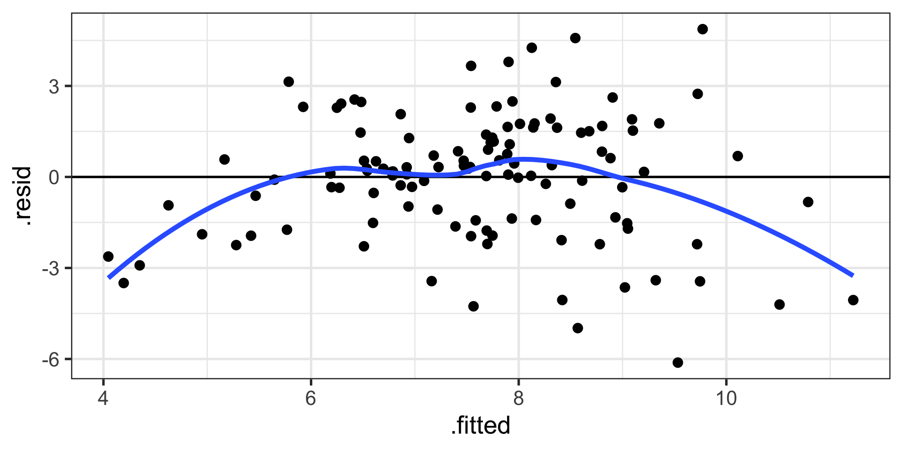
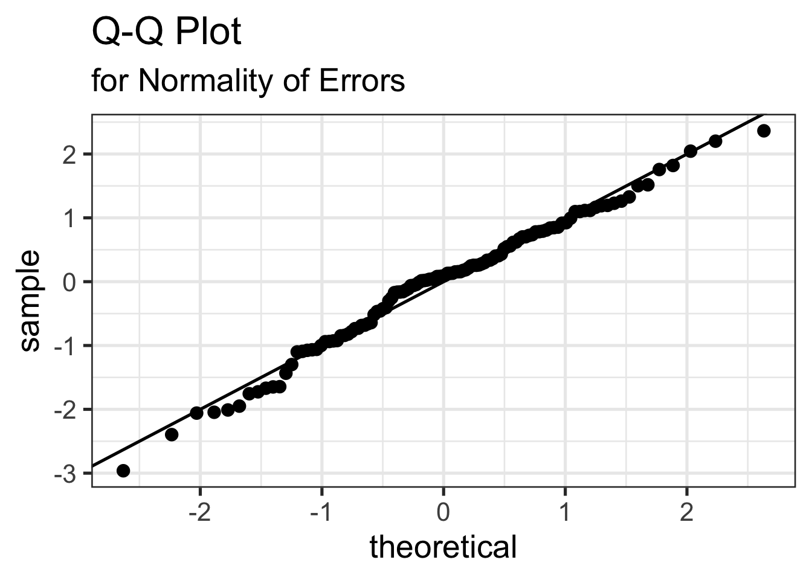
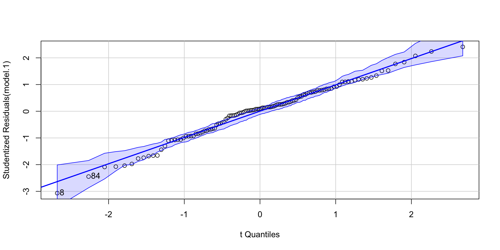
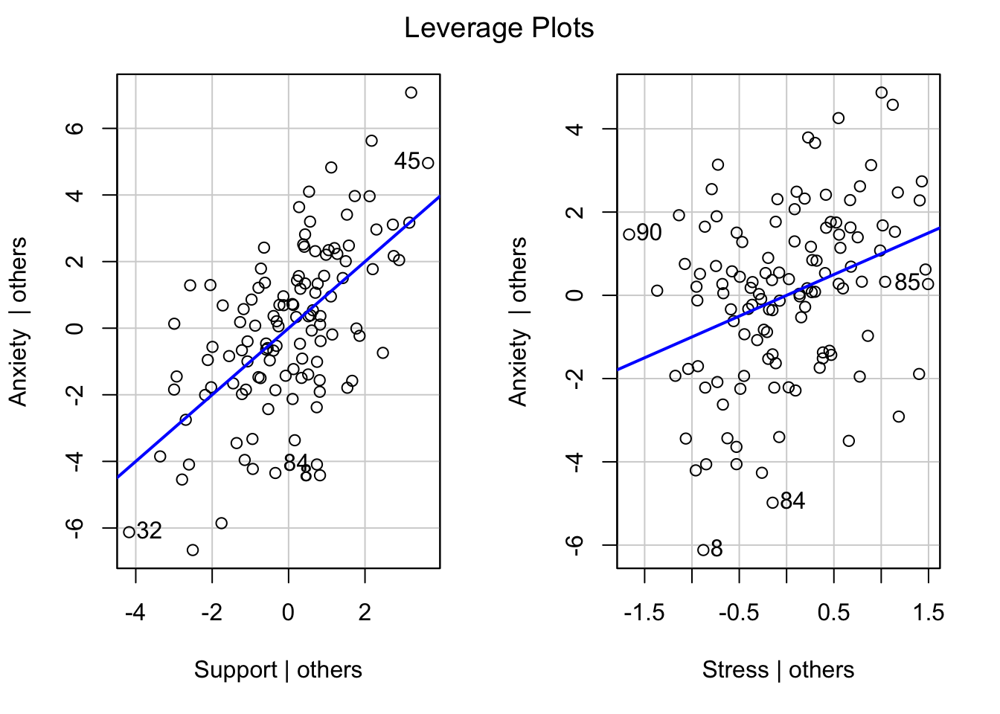

Residuals are your best diagnostic tool for assessing your regression model. Not only can they tell you if you’ve violated assumptions, but they can point to specific cases that contribute to the violations. This may help you to:
Notice patterns, which may lead you to change your theory
Remove problematic cases
Improve your research design
What are residuals?
Code
library(ggplot2)
Warning: package 'ggplot2' was built under R version 4.4.3
Assumption 1: No measurement error in our independent variables
How does measurement error affect our coefficient estimates?
How does measurement error affect our the standard errors of the coefficients?
How can we check this assumption?
Reliability Can Help!
If there is measurement error, our coefficient estimates will always UNDER-estimate the true parameter. This is because \[r_{xy} = \rho\sqrt{r_{xx}r_{yy}}\] Measurement error inflates our standard errors, because they add…error
There is ALWAYS measurement error. What do we do about this?
2. Form
Assumption 2: Correctly specified form

Don’t use linear models on non-linear data! This will underestimate \(R^2\)
3. Model
Assumption 3: Correctly specified model - This is especially important for multiple regression.
Two problems:
“Over control” and your coefficient is no longer interpretable
“Under control” and your coefficient is no longer interpretable
3. Model
“Over control” and your coefficient is no longer interpretable
Cohen and Cohen (1983) discuss several problems associated with the inclusion of covariates/multiple independent predictors in a model. Those problems were:
Computational accuracy (not a problem now, because computers)
Sampling stability (tolerance)
Interpretation
“Over control” and your coefficient is no longer interpretable
Including multiple predictors in your model requires adjusting for the overlap in these predictors.
If your two independent predictors are highly correlated, tolerance gets smaller.
As tolerance gets smaller, the standard error gets larger. This is referred to as variance inflation. The variance inflation factor is an index to assess this problem.
As the standard error becomes larger, the CIs around coefficients becomes larger. When CIs around estimates are large, then we say the coefficients are unstable.
VIF is not bounded, but generally large numbers (greater than 5 or 10, based on who’s giving you the heuristic) indicates a problem.
Code
library(car)model.2<-lm(Anxiety ~ Support + Stress, a_data)vif(model.2)
Support Stress
1.378785 1.378785
The lesson from tolerance is that, as you add predictors to your model, it is best to select predictors that are not correlated or minimally correlated with each other.
What about interpretation?
What construct does an independent variable represent once the shared variance with other constructs has been removed?
Partialling changes the meaning and interpretation of a variable.
Partialling only takes variance away from the reliable \((r_{xx})\) part of a measurement.
If a scale has reliability .7 and correlates with another variable at .3, the partialling out the covariate removes .3 of the valid .7 variance or 9% out of 49%
Heterogeneous measures run the risk of greater dissimilarity following partialling. They showed this empirically.
partialling out sub-scales – some correlations are even negative
Nothing is a good substitute for good theory and reliable measurement.
Always present zero-order correlations.
3. Model
Assumption 3: Correctly specified model - This is especially important for multiple regression.
Two problems:
“Over control” and your coefficient is no longer interpretable
“Under control” and your coefficient is no longer interpretable
Endogeniety
“Under control” and your coefficient is no longer interpretable
Endogeniety is when your your error term is associated with a predictor.
Typically when you leave out an important predictor.
If this is the true model:
\[Y_i = b_0 + b_{1}X_{1} + b_{2}X_{2} + \epsilon_{i}\] But you only model this:
\[Y_i = b_0 + b_{1}X_{1} + \epsilon_{i}\]
The extra term is absorbed into the error so that
\[Y_i = b_0 + b_{1}X_{1} + (\epsilon_{i} + X_2)\]
If \(X_1\) and \(X_2\) are correlated, and \(X_2\) is associated with \(Y_i\) above and beyond \(X_1\), then the residual and predictor in the model you ran will be correlated! ( \(r_{x_1,\epsilon} \neq 0\) )
Condition on a collider
Many ways this can happen but one common one is selecting a sample (clinical students, college students) that is associated with your variables of interest (e.g., emotion regulation, memory ability)
4. Homoscedasticity
Homogeneity of variance
the variance of an outcome is the same across two (or more) groups
Levene’s test
Homoscedasticity
the variance of an outcome is the same across all levels of all continuous predictor variables
Warning: `fortify(<lm>)` was deprecated in ggplot2 4.0.0.
ℹ Please use `broom::augment(<lm>)` instead.
ℹ The deprecated feature was likely used in the ggplot2 package.
Please report the issue at <https://github.com/tidyverse/ggplot2/issues>.

6. Normality of the errors
Code
library(car)qqPlot(model.1)

[1] 8 84
Assumption
Fix
1. Measured without error
SEM, factor scores, more data, better design
2. Correctly specified form
Different model
3. Correctly specified model
¯\_(ツ)_/¯ & specificity analyses
4. Homoscedasticity
Bootstraps, WLS, transformations
5. Independent Errors
Use different analysis method
6. Normality of the Errors
Additional IVs, different form
Robustness
Regression models are considered robust meaning that even when you violate assumptions, you can still use the same models with some safety.
E.g., t-tests are robust to violations of normality, because we can fall back on the central limit theorem.
Regression is robust to violations of some assumptions, primarily
Homoscedasticity
Normality of errors
There’s also an underlying assumption that our models are developed independent of the data.
Changing the model based on assumptions does violate the data-model-independence assumption, but it’s unclear how this affects the inferences. In general, it’s a good idea to validate the new model using a new dataset.
Changing the model based on the significance tests is bad and it’s fairly clear how this affects our inferences.
Screening your data
Calculate univariate and bivariate descriptive stats
Check the min and max to make sure data were entered correctly
Check the class of the variable
is your grouping variable a factor or numeric?
Check for skew or compare the mean and median
Compare correlation matrices with pairwise and listwise deletion for bias in missingness.
Calculate reliability for your scales.
Screening your data
Plot univariate and bivariate distributions
Look for skew and outliers
Check correlation heat maps for expected and unexpected patterns in items
Screening your data
Test assumptions of your model(s)
Calculate the VIF of each term
Graph residuals by predictors to check for endogeneity.
Graph residuals by fitted values to check for homoscedasticity.
Graph residuals by ID number (or date, or another variable not in your model) to check for independence.
Graph the distribution of residuals or the Q-Q plot to check for normality.
Screening your data
Look for univariate or multivariate outliers.
Broadly defined as atypical or highly influential data point(s)
Due to contamination (e.g. recording error) or accurate observation of a rare case
Univariate vs. Multivariate
How do we typically describe or identify outliers?
Outliers can be described in terms of three different metrics. Each conveys a sense of the magnitude of outliery-ness the case exhibits. However, some metrics also describe the degree to which your inferences will change:
Leverage
How unusual is this case from the rest of the cases in terms of predictors?
Distance
How distant is the observed case from the predicted value?
Influence
How much the does regression coefficient change if case were removed?
Outliers
Leverage tells us how far observed values for a case are from mean values on the set of IVs (centroid).
Not dependent on Y values
High leverage cases have greater potential to influence regression results
Leverage
Code
library(car)leveragePlots(model.2)

Outliers
One common metric for describing leverage is Mahalanobis Distance, which is the multidimensional extension of Euclidean distance where vectors are non-orthogonal. Given a set of variables, \(\mathbf{X}\) with means \(\mathbf{\mu}\) and covariance \(\Sigma\):
\[\large D^2 = (x - \mu)' \Sigma^{-1} (x - \mu)\]
Outliers
Code
m =colMeans(a_data[c("Stress", "Support")], na.rm = T)cov =cov(a_data[c("Stress", "Support")])MD =mahalanobis(x = a_data[,c("Stress", "Support")], center = m, cov = cov)cutoff <-qchisq(p =0.95 , df =ncol(a_data))cutoff
Distance is the distance from prediction, or how far a case’s observed value is from its predicted value
i.e., residual
In units of Y.
What might be problematic at looking at residuals in order to identify outliers?
Distance
Raw residuals come from a model that is influenced by the outliers, making it harder to detect the outliers in the first place. To avoid this issue, it is advisable to examine the deleted residuals.
This value represents the distance between the observed value from a predicted value that is calculated from a regression model based on all data except the case at hand
The leave-one-out procedure is often referred to as a “jack-knife” procedure.
Outliers
Influence refers to how much a regression equation would change if the extreme case (outlier) is removed.
DFBETAS (change in coefficient estimate without the outlier)
Outliers
Cook’s Distance is calculated by removing the \(i\)th data point from the model and recalculating the regression. It summarizes how much all the values in the regression model change when the \(i\)th observation is removed.
Analyze data with/without outliers and see how results change
If you throw out cases you must believe it is not representative of population of interest or have appropriate explanation. You need to be able to defend your decision to the readers, your colleagues, and yourself. You also need to tell people what the hell you did
Don’t throw out data just to be “safe”. Data are hard to collect and outliers are expected!
Multicollinearity
Multicollinearity occurs when predictor variables are highly related to each other. - This can be a simple relationship, such as when X1 is strongly correlated with X2. This is easy to recognize, interpret, and correct for.
Sometimes multicollinearity is difficult to detect, such as when X1 is not strongly correlated with X2, X3, or X4, but the combination of the latter three is a strong predictor of X1.
Addressing Multicollinearity
Increase sample size
Remove a variable from your model.
Composite or factor scores - If variables are highly correlated because they index the same underlying construct, why not just use them to create a more precise measure of that construct?
Centering (esp important if your model includes interaction terms)
Suppression
Multicollinearity is related to suppression. Normally our standardized partial regression coefficients fall between 0 and \(r_{Y1}\). However, it is possible for \(b_{Y1}\) to be larger than \(r_{Y1}\). We refer to this phenomenon as suppression. * A non-significant \(r_{Y1}\) can become a significant \(b_{Y1}\) when additional variables are added to the model.
A positive\(r_{Y1}\) can become a negative and significant \(b_{Y1}\).